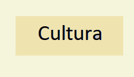
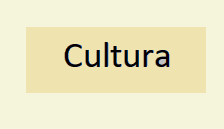

|
LOS SAMURAI´S MAS IMPORTANTES DE LA HISTORIA.
Minamoto no Tametomo (1139 –1170)
Los
primeros guerreros de la historia de Japón no eran los mayores expertos
en el uso de la katana japonesa, si no en el arco, y más concretamente
en el arte de la arquería a caballo.
Minamoto no Tametomo es
conocido como ‘el arquero infalible ’
, uno de los nombres de samuráis más famosos del gran clan Minamoto.
A mediados del siglo XII, luchó con destreza usando el arco y las flechas como su principal arma, llegando a convertirse en el
guerrero de mayor prestigido
de todo el país.
Según una leyenda,
con un solo tiro de flecha hundió un barco entero
del clan Taira, además de ganar diferentes contiendas, en las cuáles siempre estaba a la cabeza del batallón.
Fue
de los samuráis japoneses más temidos
de la época por los bandos enemigos, y su nombre se llegó a conocer en todos los rincones del país.
Luchó con
su padre, el también famoso Minamoto no Tameyoshi
, y sus dos hermanos, siendo él quién mayor destreza presentaba con el arco.

La última contienda en la que participó fue la Rebelión Hogen de la zona de Ryukyu, en la que su clan perdió y tanto
los señores como los guerreros tuvieron que huir
.
Nadie sabe exactamente dónde acabó el joven Tametomo, pero
dicen que logró llegar a Okinawa
, dónde fundó su propio reino comenzando desde cero.
Honda Tadakatsu (1548 –1610)
Experto en el uso de diferentes armas, el arma favorita de este guerrero japonés fue la
lanza tonbo-giri
, una de las tres lanzas japonesas más mortíferas, con una punta extremadamente fina y afilada.
Era conocido en el campo de batalla por llevar
una armadura muy ligera
que le permitía total libertar de movimiento, a juego con un casco adornado con una cornamenta de ciervo.

Este guerrero del antiguo Japón
luchó a finales del siglo XVI
, en una época en la que los samuráis perdieron la gloria que tenían en siglos anteriores.
Sin embargo, él supo dar honor a su oficio, convirtiéndose en uno de los
guerreros históricos más recordados en las leyendas
.
De Tadakatsu se cuentan muchas historias, como aquella que dice que
superó más de 100 contiendas
sin haber sufrido ni una sola herida o rasguño.
Se lo conoce como
el guerrero que superó a la muerte
, aunque esto se puede deber a la gran admiración que le tenían tanto sus señores como los propios enemigos.

Trabajó
bajos las órdenes del gobernante Tokugawa Leyasu
, luchando hasta los inicios del mismo periodo Edo, lo que permitió tener mayor información sobre sus proezas.
Fue uno de los grandes generales de su ejército, ocupando en ocasiones el frente en la contienda en el lugar de sus superiores,
acompañado siempre de su caballo Mikuniguro
.
Miyamoto Musashi (1584 –1645)
También del clan Miyamoto, Musashi fue el
mayor maestro espadachín de la época
, considerado entre los cinco samuráis más letales y asesinos de la historia.
Luchó
a finales del siglo XVI y hasta mediados del siglo XVII. Se dice que
fue uno de los pioneros en la enseñanza del uso de las espadas para los
posteriores
guerreros ninja
.

Es un samurái famoso porque
aprendió desde niño a luchar
junto a sus padres y abuelos.
La espada era una extensión de su brazo,
luchando por primera vez con tan solo 13 años
, en un combate a muerte que le llevó a la mayor de sus victorias.
Procedente de una familia noble,
participó en 6 batallas
, aunque tuvo una vida bastante más tranquila que otros samuráis. No fue de los samuráis más poderosos.
Sin embargo, dedicó toda su vida al estudio de la espada y a su entrenamiento,
especializándose en los combates uno a uno
en los que ponía a prueba sus técnicas de artes marciales aprendidas.

Gracias
a esto, tuvo tiempo para dedicarse a la enseñanza, creando su propia
escuela de lucha que aún perdura hasta la actualidad,
la escuela Niten Ichi Ryu
. Quizás sea el mejor samurái de toda la historia de Japón.
También es el
autor de varios libros que hizo en su etapa adulta
, entre los que destaca
‘El libro de los cinco anillos ’
,
que consiste en uno de los tratados de artes marciales más completos
que analiza la historia de la lucha japonesa a través de los siglos.
Toyotomi Hideyoshi (1536 –1598)
Junto a Oda Nobunaga y Tokugawa leyasu, Toyotomi Hideyoshi fue el guerrero samurái que pertenece a
‘los tres grandes unificadores de Japón ’
.
Fue un luchador que
no procedía de ningún clan importante
,
ni si quiera de una familia noble. Ascendió desde una casta más baja
hasta convertirse en el hombre de confianza de Oda Nobunaga, destacando
por encima del resto de generales.

Él mismo se autoproclamó como
‘el Taiko ’
, siendo una mención muy bien recibida por sus seguidores.
Comenzó en el puesto más bajo del ejército
, como un
ashigaru
, para ir ganándose el respeto de sus superiores y de los señores, así como el miedo de sus enemigos en el campo de batalla.
Desde
su orígenes guerreros, su ascenso al poder le llevó a participar en las
decisiones políticas. Hizo propuestas para las reformas políticas que
sentaron las bases del posterior
shogunato
Tokuyama
en el siglo XVII.
Pasó del campo de batalla a un
puesto como diplomático en muy pocos años
, aunque nunca dejó del todo su entrenamiento en la lucha.

A mediados del siglo XVI Hideyoshi
se casó con una joven de una familia aristócrata
, y siguió trabajando como estratega militar.
A través de sobornos y favores
logró separar y derrotar diferentes clanes enemigos
, demostrando que la valía de un samurái no siempre se muestra en su manejo con el arco o la espada.
Takeda Shingen (1521 –1573)
Shingen fue uno de los mejores guerreros de la historia del país nipón, que
participó en las batallas por el control del imperio
durante el periodo Sengoku.
Fue
conocido como ‘el tigre de Kai ’
,
y su mayor rival en el campo de batalla, Uesugi Kenshin, fue ‘el dragón
de Echigo ’, dos animales enemigos también en la mitología budista.

El joven Shingen nació como
hijo del jefe del clan Takeda
, lo que le otorgó desde pequeño el gran honor de recibir el mejor entrenamiento con las diferentes armas.
Este estatus también se reflejó durante su vida en la calidad y el tipo de armadura que usaba, con una
decoraciones extraordinarias
que lo diferenciaban del resto de líderes de los ejércitos.
Sus constantes disputas con su padre en su juventud
le llevó a arrebatarle el control del clan
, poniéndolo a la cabeza a lo largo de una serie de victorias, la mayoría contra el clan enemigo Uesugi.
Fue ante este ejército cuando el clan Takeda fue finalmente eliminado,
perdiendo el control
durante muchos años.

Tras la muerte del líder, su hijo Takeda Katsuyori tomó el relevo como jefe del clan
, intentando alzar de nuevo la gloria de su familia.
No fue hasta generaciones después cuando
recuperaron la importancia que tuvieron
, con un líder combatiente como fue en su momento el samurái famoso Takeda Shingen.
Tomoe Gozen (1157 –1247)
Aunque entre los muchos guerreros de la historia de Japón había
muchos personajes de sexo femeninos
, la mayoría de sus nombres no se recuerdan en la actualidad.
Tomoe Gozen es una de las pocas guerreras samuráis
que destacan de este periodo, participando en las Guerras Genpei de finales del siglo XII.

Las guerreras femeninas eran conocidas como
onna bugeisha
, y tenían la misma importancia que los hombres en el campo de batalla.
Tomoe concretamente fue una de las chicas que
mejor manejaba tanto el arco como la katana
, luchando sobre su caballo con una habilidad increíble.
Esta chica fue descrita como
una joven muy hermosa
, bella, de pelo largo y negro, tez blanca, y cuerpo muy menudo y delgado.
Bajo
su pesada armadura se convertía en una sanguinaria guerrera, que se
movía de forma rápida esquivando los golpes de los enemigos, mientras
acababa con todos a su alrededor ataviada con su arco y
una espada más grande que ella misma
.

Luchó junto al clan Minamoto hasta su
muerte en la batalla de Awazu en 1184
.
Sin embargo, existen diferentes leyendas que
aseguran que Tomoe no murió realmente
,
si no que fue una de las 5 únicas personas que acabaron la batalla con
vida, y que después de esta se retiró a un lugar alejado dejando las
armas para siempre.
Minamoto Yoshitsune (1159 –1189)
Otro de los miembros del clan Minamoto que
luchó junto a Gozen en las Gerras Genpei
fue Yoshitsune.
Pasó a ser uno de los grandes líderes del clan cuando parte de su familia murió durante la Rebelión Heiji, y algunos de
sus hermanos fueron exiliados
.

Durante su infancia estuvo bajo los cuidados de unos monjes
al norte de Kioto
, para unirse a los ejércitos en primer lugar con el clan Taira. Comenzó ganando varias batallas que le permitió
ascender rápidamente de rango
.
Esto
devolvió el honor a su familia, recuperándose después de los fracasos
que la habían dejado de lado. Yoshitsune volvió a poner en todo lo alto
su apellido, volviendo a ser
el clan dominante en todo el país
.
Su papel en cada una de las batallas en las que participó fue principalmente como comandante para
movilizar a las tropas
.
Más que un temido guerrero,
fue uno de los mejores samuráis estrategas de la historia
, aunque siempre se mantenía con su espada en primera fila en el campo de combate, mostrando gran valentía.

Al terminar la guerra, fue
perseguido por su hermano Yoritomo
, el cuál acabó con su vida con tan solo 30 años.
Sobre su fatídica muerte existen muchas leyendas que hoy en día
forman parte del folklore japonés
. La figura de ambos guerreros aparece en muchas series, películas e incluso en videojuegos.
Date Masamune (1566 –1636)
Un papel parecido a Yoshitsune fue el que tuvo Masamune en los conflictos bélicos que tuvieron lugar en Japón justo
antes del comienzo del Periodo Edo
.
Vivió
entre los siglos XVI y XVII
, descendiendo de una familia noble de la cuál aprendió a liderar fuera y dentro del campo de batalla.

Con tan solo 14 años comenzó a ayudar a su padre a llevar su primera campaña de guerra.
A los 17 años le sustituyó al mando de su ejército
, conquistando gran parte del país, y uniéndose con otros señores de diferentes clanes para sumar fuerzas contra el enemigo.
Siempre estuvo rodeado por militares que le doblaban su edad, demostrando ser un
joven muy aventajado para las tácticas de guerra
en la batalla y el asedio.
Una característica que lo diferenciaba del resto es que siempre llevaba
un casco con forma de campana
con una gran luna creciente en la parte superior.
Era
conocido como ‘el dragón de un ojo ’
,
porque curiosamente de pequeño perdió la vista del ojo derecho por la
viruela, aunque esto no le impidió tener la mejor visión para la
conquista.

Además de construir muchos palacios en la región dónde reinó y
fundar la ciudad de Sendei
, también se preocupó de enviar barcos a tierras lejanas.
Fue uno de los precursores de la
inclusión de la religión cristiana en Japón
, y de la cultura traída de Europa y la América Colonial de la época.
Oda Nobunaga (1534 –1582)
Hijo de un señor menor, Oda Nobunaga
llegó a convertirse en un daimyo
, o señor feudal japonés, de gran relevancia por méritos propios.
Su familia se encontraba divida a mediados del siglo XVI, y
tras la muerte de su padre
, luchó contra otros miembros para tomar el control, llevándose por delante incluso a su hermano.

Esta contundencia
fue la que le caracterizó durante toda su carrera militar.
Desde el comienzo de su mandato
fundó un pequeño ejército
con tan solo 3000 soldados, junto a los cuáles comenzó a conquistar grandes territorios.
El
manejo de la espada y sus estrategias militares
fueron sus mejores armas.
Aunque
no es muy conocido en el resto del mundo, en Japón es uno de los
samuráis más famosos porque fue uno de los precursores de la
unificación de los diferentes territorios del país
hasta devolverle su antigua categoría de Imperio.

Dirigió junto a sus vasallos
la antigua ciudad de Kioto
, con un gran sentido del honor que fue alabado incluso por sus enemigos.
Sin
embargo, el honor fue lo que acabó con su vida, llevándole al suicidio.
Cuando su general Akechi Mitsuhide de mayor confianza le traicionó,
prendió fuego al templo dónde este vivía, para después quitarse la vida
a él mismo con la
solemne técnica del
harakiri
.
Hojo Masako (1157 –1225)
Aunque son muchos los samuráis más famosos que han formado parte de la historia de Japón, una
de las más influyentes de sexo femenino
fue Hojo Masako.
Guerrera japonesa de gran belleza y líder política de las principales regiones del país
desde finales del siglo XII hasta principios del XIII, luchó junto al clan Minamoto, instaurando el
shogunato
.

Esta
onna bugeisha
,
o mujer guerrera, fue entrenada por su propio padre desde su infancia.
Aprendió a montar a caballo, el arte de la caza y la pesca
tradicionales, el manejo de la katana, del
sable largo japonés o
naginata
, y otras armas tradicionales.
También tuvo el honor de participar junto a su padre en las
decisiones políticas y estrategias militares
, adquiriendo un carácter de líder que le llevó a sobresalir por encima de otros hombres del clan.
Masako fue una
mujer samurái muy calculadora y estratégica
, tanto en la lucha en el propio campo de batalla, como en la política.
Esto la llevó a conquistar gran parte de las tierras de Japón liderando su ejército, junto a
Minamoto no Yoritomo
, su mano derecha, contra el clan de los Taira.

Hojo Masako es de los samuráis más importantes en Japón porque
fue la primera mujer al frente
, con un poder que no ha vuelto a tener ninguna otra militar.
Junto a Yoritomo y Tokimasa, ambos hermanos del clan Minamoto,
compartió el poder absoluto del país
durante muchos años.
| 
 
